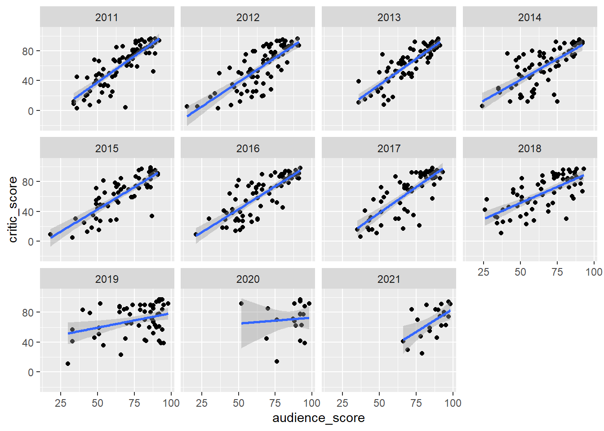

Chapter 6 Results
6.1 Overview of Analysis
For our project, we decided to focus on movie box office success, and how that might be impacted by critic’s reviews. Here, we define critical reviews from 3 different metrics: IMDB ratings, Rotten Tomatoes Audience Ratings, and Rotten Tomaotes Critic ratings. For box office success, we initially compare “gross”, which is defined as physical earnings at a theater, and “total gross”, which is define as all ticket sales + merchandise, DVD sales, rentals, etc. In order to conduct our analysis, we decided to start top down - first looking at box office trends. Then, we decided to look at ratings trends. And finally, we decided to look at how the two relate.
The first piece of our analysis is looking at box office gross, and total gross, over time.
6.2 Box Office Revenue
Since 2011 (and pre-covid), studios across the industry have seen steady increases in both their gross, and total gross for the top 200 titles in each year. This tells us that before COVID, movies were generally seeing increasing box office revenues.

If we zoom into the period from 2019 - 2021, we can see the month by month drop-off that studios saw due to COVID. Particularly, when cinemas closed March 2020, gross drops to $0. There was a minor rebound in Q4 of 2020 (October - December), but quickly fell off again when cases started rising in the second and third waves.

Next, we decided to take a look at the studio level. For this analysis, we turned only to “total gross”, as we felt it better described the success of the movie. Because total gross includes streaming and sales revenue outside of the actual theater, especially with COVID-19 forcing viewers to watch movies from home, we felt that this was a better metric to observe moving forward. Therefore, any chart that references “gross” implies total gross.
When we take a look at studio revenue, there are certain ones that stand out. Because the list includes independent studios that have only 1-2 releases every few years, we need to filter by total gross over the period 2011-2021. The first group are all studios that grossed over $2B in this period. Clearly, Disney is the clear winner. From 2016 - 2019, largely driven by the success of the Marvel franchise, they saw significantly higher grosses than competitors.
Smaller studios saw pretty flat gross curves during this period:


The smallest studios have more movement than the larger ones. What is particularly interesting are the new studios who only started releasing movies starting in 2018/2019. Because we calculated the aggrgate over the period 2011-2021, it will be interesting to see if their aggregate gross over the next 5 years bumps them into other gross bands.

6.3 Average Ratings
The next set of data we considered was how movies are rated. We aggregated from 2 sources, and have 3 metrics: Rotten Tomatoes Critic Scores, Rotten Tomatoes Audience Scores, and IMDB Ratings. As we can see in the charts below, the averages are constrained between ~50 and ~75. However, when we zoom in, we can start to see some more nuances form. Until 2018, the 3 sets of ratings generally followed a similar pattern. However, once we reach 2019, the audience scores from Rotten Tomatoes are much more positive, and average above 70.

Now that we know how the average has trended over time, also want to see from each source, what the distribution of scores look like. In order to accomplish that, we created histograms.

What this shows us it that IMDB scores have a much tighter distribution around scores in the 60-65 range. Compared to rotten tomatoe scores that see a fatter right tail, and are more equally distributed compared to the IMDB ratings.
We can then check to see how normal each distribution is:
And here we have some more insight to our ratings data! Clearly the IMDB data is the closest to being normally distributed, whereas the rotten tomatoes scores have much fatter right tails.
The next step in our calculations is looking at the correlations between ratings. In order to accomplish this, we created 3 sets of scatter plots. We also wanted to see what the difference between high grossing movies was, and lower grossing movies were. Therefore, we faceted by: all movies, movies that grossed over 100M, movies that grossed over 200M, and movies that gross over 500M.
6.4 Comparing Ratings Metrics
Rotten Tomatoes - Audience vs. Critic Scores

Clearly, from the scatter plots, there is a high degree of correlation between audience scores and critic scores from Rotten Tomatoes. This applies across all grossing movies.
IMDB Rating vs. Rotten Tomatoes Audience Score
IMDB Rating vs. Rotten Tomatoes Critic Score

Clearly, in aggregate, there is a high degree of correlation between Audience Scores (Rotten Tomatoes) and Critic Scores (Rotten Tomatoes). It’s interesting, though, when we compare the Rotten Tomatoes scores with IMDB, we can see that for movies with higher grosses, there is a lower level of correlation.
The next cut we wanted to include is looking at how these scores are correlated over time. As we saw in the line chart, there was some deviation after 2018, so it will be important to see what that looks like from a scatter plot perspective.
6.5 How Have Ratings Compared Over Time?
As we saw in the time series chart, the ratings behavior differed over time. Therefore, we faceted our scatter plots by year.
Just as before, the audience scores and critic scores on rotten tomatoes appear to be highly correlated.


Clearly, before 2018, the scores are highly correlated. However, after 2018, the scores begin to deviate.
The next perspective we wanted to add was to see how scores impacted movie gross. In order to accomplish this, the first perspective we wanted to take was seeing a box and whisker plot to see based on score bands (in increments of 10), where gross was distributed. For the box and whisker plots, we decided to use only movies that grossed over $50M, because when we included smaller grossing films there was a significant amount of noise in the data.
6.6 Are Box Office Returns Tied to Audience Perception?


As we can see, in general, the higher the movies are rated, the more they gross. However, if we look closely at some of the middle ratings bands, e.g. 40-70, we do see a number of outliers popping up.
Now, we can take a look at the correlations. Because we saw that ratings differed over time in our previous exercise, we decided to include the facted point of view along with the aggregate view when presenting these charts. This way, we can get a more holistic viewpoint, and identify and behavior that might tell us a different story.
The first chart shows the correlation betwen Audience Score and total gross.
Gross vs. Rotten Tomatoes Audience Scores


As we can see, there exists a low level of correlation between audience scores and gross. Because the gross is so widely distributed, it appears that the audience rating has little relation to how much a movie makes at the box office.
Gross vs. Rotten Tomatoes Critic Scores


This trend continues when we compare critic scores - the best fit line is relatively flat, and the outliers we mentioned earlier seem to make the correlation weaker.
Gross vs. Rotten Tomatoes IMDB Scores


Here, when we look at the IMDB ratings, we start to see some more nuance. When we look at the aggregate chart, the best fit line has a steeper slope compared to the Rotten Tomatoes ratings. As we saw, the Rotten Tomatoes had a wider distribution, and were less clustered around the mean from our histograms. What’s interesting is that when we start to constrict our sample and only include higher grossing movies, the correlation actually appears to be somewhat more positive. So now, the next question is, how has this trended over time? Well in order to get a better POV, we constructed the following correlation table for each year.
| IMDB | Audience | Critic | |
|---|---|---|---|
| 2011 | 0.1199753 | 0.1945909 | 0.0630020 |
| 2012 | 0.1992773 | 0.1351904 | 0.0538755 |
| 2013 | 0.2987806 | 0.4100765 | 0.2379156 |
| 2014 | 0.2165173 | 0.3064287 | 0.2338210 |
| 2015 | 0.1704947 | 0.2291249 | 0.1626275 |
| 2016 | 0.2692467 | 0.2762684 | 0.1647143 |
| 2017 | 0.2665871 | 0.3187132 | 0.2211926 |
| 2018 | 0.2192689 | 0.1959654 | 0.1609221 |
| 2019 | 0.1685769 | 0.1536440 | 0.1751435 |
| 2020 | -0.0349904 | 0.2352123 | 0.0313608 |
| 2021 | 0.1291776 | 0.2077810 | -0.0605791 |
As we can see, there are varying levels of correlation for each year and for each source. What’s interesting, is that in some years, the IMDB level of correlation with gross is high, and the Rotten Tomatoes correlation is low. The inverse is also true in some years.

Lastly, we can take a look at, in aggregate. What this tells us is that even if we want to ascribe some value to Rotten Tomatoes, or IMDB ratings being highly correlated with box office succes, the numbers just don’t seem to back it up.
Now we must ask ourselves, what is the next metric we should look at?
The last cut that we wanted to include to round out our analysis is looking at the impact of genre. Because there are a number of genres, the most efficient way to categorize our data is by using a principle component analysis and including a biplot charting how gross and ratings are impacted by genre.
6.7 The Last Comparison - How Does Genre Play a Roll?

And here we see some interesting details! When we look the different vectors, we can see that the genre itself is one of the bigger drivers of a movie’s box office succes. If we look at the vector for “Gross”, we can see that over two thirds of all genres fall within the upper half of the plane. Therefore, we can start to ask ourselves, how is gross distributed across genre?

And here is what we were missing! At the end of the day, when we look at total gross by genre, it’s highly concentrated in Action, Adventure, and Comedy. This makes sense when we consider some of the biggest box office successes over the last decade. Star Wars, Marvel Movies, and other action franchises have dominated the box offices, and so therefore it appears that the consolidation of genres is driving a lot of this revenue.